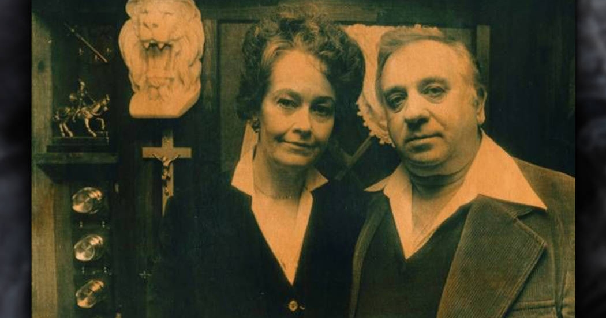
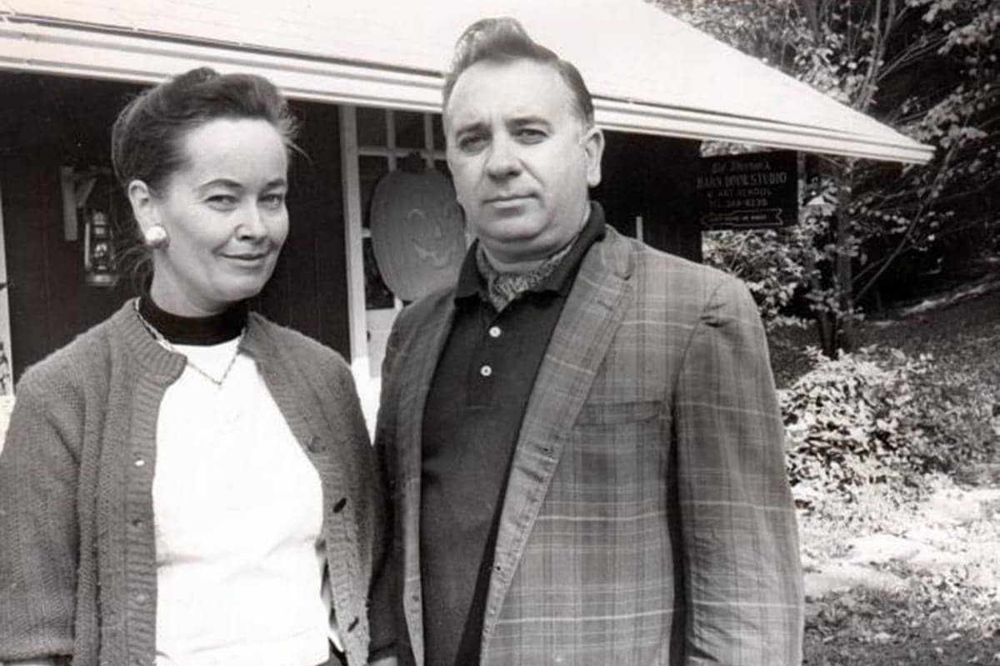
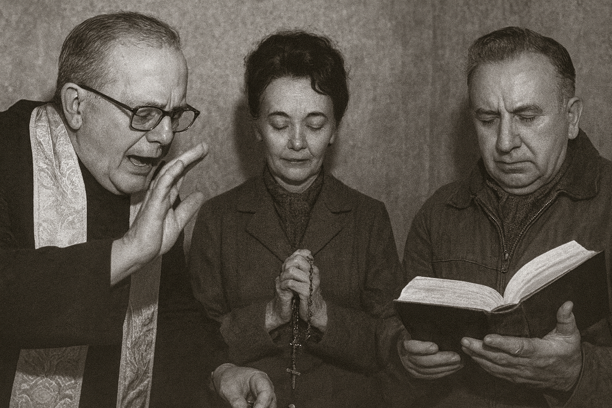
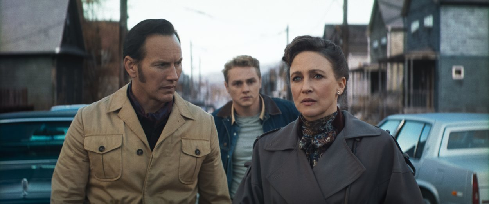

Bienvenidos

En esta página web hablaremos de los warren. Sus comienzos y camino del ocultismo
También exploraremos el museo de los warren, descubriendo los objetos malditos mas peligrosos recolectados de su travesia sobre lo paranomal

En esta página web hablaremos de los warren. Sus comienzos y camino del ocultismo
También exploraremos el museo de los warren, descubriendo los objetos malditos mas peligrosos recolectados de su travesia sobre lo paranomal

Ed Warren, nacido en 1926 en Bridgeport, Connecticut, siempre relató que desde niño había experimentado fenómenos extraños en su propia casa. Estas vivencias despertaron en él una curiosidad profunda por lo sobrenatural. Tras servir en la Marina durante la Segunda Guerra Mundial, se dedicó a estudiar demonología de manera autodidacta, convencido de que existían fuerzas malignas capaces de influir en la vida de las personas. Lorraine, nacida en 1927, aseguraba tener habilidades psíquicas desde pequeña, especialmente clarividencia y percepción extrasensorial. Cuando se casaron en 1945, decidieron unir sus talentos para explorar lo desconocido.
Durante más de cincuenta años, Ed y Lorraine Warren fueron considerados los principales expertos estadounidenses en el tema de los espíritus y la demonología. Las autoridades pidieron repetidamente a los Warren que controlaran algunos de los brotes más profanos de fenómenos diabólicos del país.
Los casos que han trabajado los Warren implican algunas de las actividades paranormales más extremas jamás documentadas. Casos en los que sacerdotes han quedado poseídos. Casos en los que personas son agredidas físicamente. Casos en los que entidades sobrenaturales se manifiestan y luego presiden. Casos en los que se viola el tiempo y el entorno físico se reorganiza por completo. Casos en los que los espíritus no solo acechan una casa, sino que la destrozan visiblemente.
Ed y Lorraine Warren han dedicado sus vidas a este trabajo, y todo su conocimiento y experiencia han sido transmitidos con éxito a Tony Spera y a la organización NESPR para continuar su legado.

En sus primeros años, los Warren no eran famosos ni contaban con apoyo institucional. Lo que hacían era recorrer pueblos de Nueva Inglaterra en busca de casas que, según rumores locales, estaban embrujadas. Ed pintaba cuadros de esas mansiones y los ofrecía a los dueños como obsequio. Esta estrategia les permitía entrar en contacto con las familias y, poco a poco, ganarse su confianza. Una vez dentro, Lorraine utilizaba sus habilidades psíquicas para percibir presencias, mientras Ed analizaba los testimonios y buscaba signos de actividad demoníaca.
Uno de los primeros casos que registraron ocurrió en Connecticut, cuando una familia afirmaba ver apariciones y escuchar ruidos inexplicables en su hogar. Lorraine describió con detalle figuras y sucesos que coincidían con lo que los dueños habían experimentado, lo que impresionó a la familia. Ed interpretó estos fenómenos como manifestaciones de espíritus atrapados y posibles influencias demoníacas. Este expediente, aunque poco documentado en términos oficiales, marcó el inicio de su archivo de casos, que más tarde se conocería como los “Expedientes Warren”.

El legado de Ed y Lorraine Warren en el cine es uno de los más influyentes dentro del género de terror contemporáneo. Aunque su trabajo comenzó en la vida real como investigadores paranormales, sus casos se convirtieron en la base de una franquicia cinematográfica que ha marcado a millones de espectadores en todo el mundo.
La primera gran adaptación llegó en 2013 con El Conjuro, dirigida por James Wan. La película narraba el caso de la familia Perron en Rhode Island y presentaba a los Warren como protagonistas centrales. El éxito fue inmediato: no solo revitalizó el género de terror, sino que también dio inicio a un universo compartido de películas conocido como The Conjuring Universe. Este universo incluye títulos como Annabelle (2014), Annabelle: Creation (2017), Annabelle Comes Home (2019), La Monja (2018), La Maldición de la Llorona (2019) y El Conjuro 2 (2016), basado en el poltergeist de Enfield en Inglaterra.
El legado también se refleja en la forma en que el cine de terror contemporáneo adoptó la idea de los “expedientes” como base narrativa. Cada caso de los Warren se convirtió en una historia independiente, pero conectada dentro de un mismo universo. Esto permitió que el público se sumergiera en un mundo coherente y expansivo, similar a lo que ocurre con las sagas de superhéroes, pero aplicado al terror.